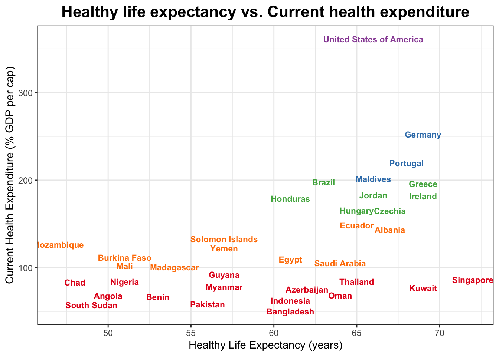

Clustering Countries by Healthy Life Expectancy and Current Health Expenditure
ACTEX Learning - AFDP: R Session
Introduction
Clustering is a powerful technique used in data analysis to group similar data points together based on their characteristics. In this example, we will use K-means clustering to group countries based on two important health indicators: Healthy Life Expectancy (HLE) and Current Health Expenditure (CHE) as a percentage of GDP.
Data Preparation
We will use two datasets from the World Health Organization (WHO).
Healthy Life Expectancy (HLE)
Healthy life expectancy (HALE) at birth (years) is an estimate of the average number of years that a person can expect to live in “full health” by taking into account years lived in less than full health due to disease and/or injury.
[1] 24420 34In this dataset, HALE is calculated from life tables and the prevalence of diseases and injuries that cause health loss. The data frame contains 34 columns and 24420 rows belonging to 185 countries/territories across 22 from 2000 to 2021 for 2 indicators:
- Healthy life expectancy (HALE) at birth (years)
- Healthy life expectancy (HALE) at age 60 (years)
We select only Healthy life expectancy (HALE) at birth (years) and Both sexes, and rename columns to be more user-friendly. This is done to simplify the analysis, and to consider the level of Healthy life expectancy (HALE) for the entire population of each country, across all available years, but you can explore other indicators and dimensions in the dataset.
country hle
1 Lesotho 44.63
2 Central African Republic 45.43
3 Somalia 47.42
4 Eswatini 47.47
5 Mozambique 49.72
6 Afghanistan 50.45Next, we rename some countries for consistency with other datasets, and calculate the average healthy life expectancy for each country by grouping the data by country and summarizing the healthy life expectancy with the reframe() function.
# A tibble: 6 × 2
country hle
<chr> <dbl>
1 Afghanistan 50
2 Albania 67
3 Algeria 65
4 Angola 50
5 Antigua and Barbuda 66
6 Argentina 66Current health expenditure (CHE)
Current health expenditure (CHE) as percentage of gross domestic product (GDP) (%) is the share of a country’s gross domestic product (GDP) that is spent on health care.
In this dataset, Current health expenditure (CHE) as percentage of gross domestic product (GDP) (%) is the share of a country’s gross domestic product (GDP) that is spent on health care. The data frame contains 34 columns and 4384 rows belonging to 194 countries/territories across 23 from 2000 to 2022 for 1 indicators:
country che
1 Brunei Darussalam 1.82
2 New Zealand 10.03
3 Chile 10.06
4 Netherlands (Kingdom of the) 10.10
5 Micronesia (Federated States of) 10.34
6 Portugal 10.47# A tibble: 6 × 2
country che
<chr> <dbl>
1 Afghanistan 246.
2 Albania 144.
3 Algeria 106.
4 Andorra 152.
5 Angola 68.3
6 Antigua and Barbuda 117. Jointed dataframe HLE and CHE
Clustering with K-means
What is K-means clustering?
The goal of the K-means clustering algorithm is to find groups in the data, with the number of groups represented by the variable K. The algorithm works iteratively to assign each data point to one of K groups based on the features that are provided. Data points are clustered based on feature similarity.
To know a bit more about the function, you can check the documentation with the command below:
?kmeans() country hle che group
1 Afghanistan 50 245.83 2
2 Albania 67 143.64 5
3 Algeria 65 106.28 5
4 Angola 50 68.29 1
5 Antigua and Barbuda 66 117.26 5
6 Argentina 66 208.09 2We select a random group of countries (50), to avoid overplotting in the visualization.
Data Visualization
In this scatter plot, each point represents a country, with the x-axis showing healthy life expectancy (HLE) and the y-axis showing current health expenditure (CHE) as a percentage of GDP. The points are colored based on their cluster group, which was determined using the K-means clustering algorithm. The plot also includes vertical and horizontal lines that divide the data into quadrants, which can help to identify patterns or trends in the relationship between HLE and CHE.
ggplot(CHEHLE_sample %>%
mutate(group = as.factor(group)),
aes(x = hle, y = che, label = country)) +
geom_text(aes(y = che, x = hle, color = group),
check_overlap = T,
size = 3,
fontface = "bold",
show.legend = FALSE) +
scale_color_brewer(palette = "Set1") +
labs(title = "Healthy life expectancy vs. Current health expenditure",
x = "Healthy Life Expectancy (years)",
y = "Current Health Expenditure (% GDP per cap)") +
theme_bw() +
theme(plot.title = element_text(face = "bold", hjust = 0.5, size = 16))
Data sources
Healthy life expectancy at birth (HLE - latest available year, 2020): https://www.who.int/data/gho/data/indicators/indicator-details/GHO/gho-ghe-hale-healthy-life-expectancy-at-birth
Current health expenditure (CHE): https://www.who.int/data/gho/data/indicators/indicator-details/GHO/current-health-expenditure-(che)-as-percentage-of-gross-domestic-product-(gdp)-(-)
References
- World Health Organization (WHO) Global Health Observatory (GHO) data repository: https://www.who.int/data/gho
- K-means clustering: https://en.wikipedia.org/wiki/K-means_clustering